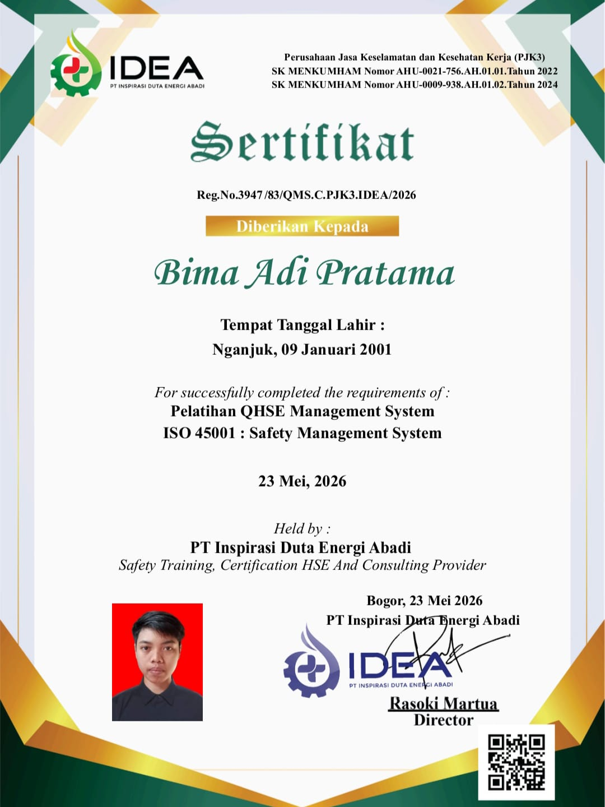

Profil
Operator Produksi berpengalaman 5 tahun di manufaktur dengan kemampuan operasional mesin, quality checking, penggunaan alat ukur, dan pemecahan masalah sederhana di area produksi. Terbiasa bekerja dengan target, mengutamakan ketelitian, keselamatan, dan kualitas. Siap bekerja keras, cepat belajar, dan memberikan kontribusi nyata sejak hari pertama.
Terbiasa bekerja di lingkungan manufaktur, menjalankan mesin, mengikuti SOP produksi, melakukan quality checking, menjaga keselamatan kerja, dan bekerja dengan sistem shift.
Pengalaman Kerja
Operator Produksi – Injection Molding
Pengalaman: ±4 Tahun
- Mengoperasikan mesin injection molding.
- Melakukan monitoring proses produksi.
- Memastikan hasil produksi sesuai standar.
- Melakukan pemeriksaan visual produk.
- Mengikuti SOP dan aturan K3.
- Menjaga kebersihan area kerja.
- Terbiasa bekerja dengan sistem shift.
- Bekerja untuk mencapai target produksi.
- Berkoordinasi dengan tim ketika terjadi kendala produksi.
Kemampuan
Kelebihan
- Memiliki pengalaman langsung di lingkungan manufaktur.
- Terbiasa bekerja dengan mesin produksi.
- Terbiasa bekerja sistem shift.
- Teliti dalam melakukan pemeriksaan produk.
- Mampu bekerja dalam tim.
- Bertanggung jawab terhadap pekerjaan.
- Mau mempelajari proses dan teknologi baru.
Pendidikan
MAN 1 Nganjuk
Jurusan IPS
Lulus Tahun 2020
Sertifikat & Pelatihan

HSE Training
Health, Safety & Environment
ISO 9001
Quality Management System
ISO 14001
Environmental Management System

ISO 45001
Occupational Health & Safety
Pengembangan Diri
- Meningkatkan kompetensi teknis dan produktivitas di bidang manufaktur.
- Mengembangkan kemampuan quality control, problem solving, dan troubleshooting.
- Berorientasi pada kualitas, keselamatan, efisiensi, dan target produksi.
- Siap beradaptasi dengan mesin, teknologi, dan proses baru.
Tujuan Karier
Berkembang di bidang manufaktur dengan mengandalkan pengalaman produksi, kemampuan teknis, ketelitian, dan disiplin untuk menghasilkan kerja yang aman, berkualitas, dan produktif.
Kontak
Nama: Bima Adi Pratama
Email: adibima825@gmail.com
Telepon: 0895367343529
Lokasi: Nganjuk, Jawa Timur, Indonesia